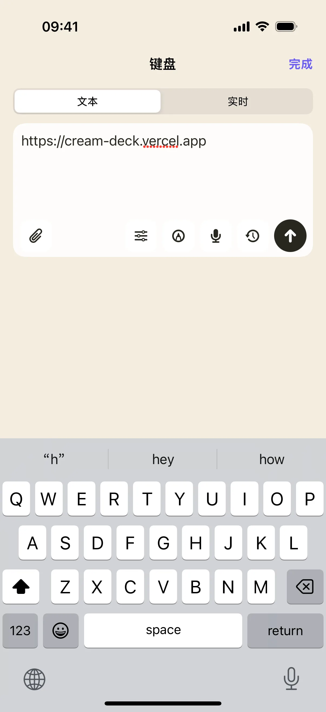
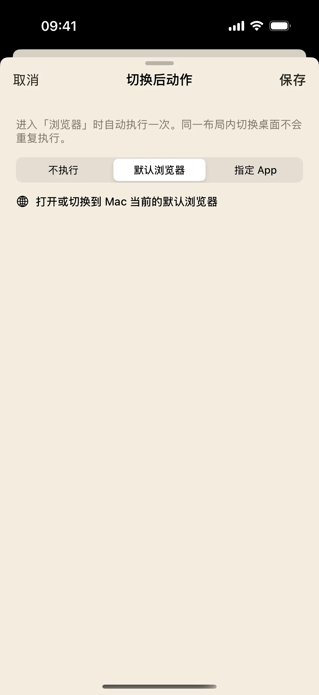
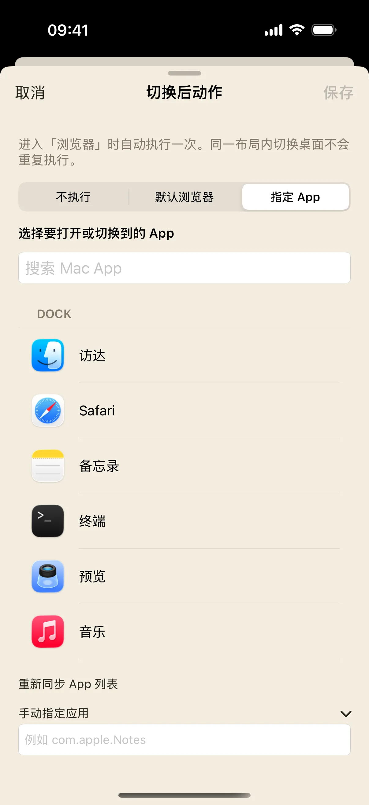

这次练习从一个明确的网址开始：在手机输入，检查 Mac 浏览器打开的页面，再新建和切换标签页。最后再设置每次进入布局时要打开哪个浏览器。
开始前准备
- iPhone / iPad 安装奶猫妙控 1.2.0，Mac 安装同版本配套端；完成配对，并允许 Mac 端的辅助功能权限。需要电脑画面时，再开启屏幕录制权限。
- 在 Mac 上准备一个浏览器窗口。以下按预设快捷键讲解；如果你修改过浏览器快捷键，先恢复或对照自己的设置。
1. 打开浏览器布局
在 App 底部点“布局”，在列表中找到“浏览器”。布局较多时用搜索框搜索名称；有多个桌面的方案先点右侧箭头展开，再点桌面名称；搜索具体桌面名称也能找到它。
预设的切换后动作是打开默认浏览器。进入后先看 Mac 是否显示正确的浏览器窗口；也可以点手机上的“启动浏览器”重新发起打开请求。这里的默认浏览器取自 Mac 系统设置。
2. 输入一个网址，再发送
点“输入网址或搜索”，在打开的文字输入面板里输入 https://cream-deck.vercel.app 。先核对拼写，再点“上屏”。
这颗按键配置了完整动作：先聚焦 Mac 地址栏，再输入文本，最后发送回车。因此不要在文字末尾再手动补一个回车。检查 Mac 是否打开奶猫妙控官网；若仍停留在原网页，先确认浏览器处于前台。

3. 新建标签页，练习切换与恢复
点“新建标签页”，在 Mac 确认多出一个标签页，再用上一步的方法打开另一个地址。左右滑动“标签页”控制，观察 Mac 当前页是否在两个标签之间切换。
轻点标签页控制会刷新；长按会关闭当前标签页。只在临时练习页上试长按，随后点“恢复标签页”，检查刚才的页是否回来。页面里有未保存表单时，先处理浏览器的确认提示。
4. 搜索当前网页里的一个词
点“页内搜索”，Mac 浏览器应打开正文查找。再点“键盘输入”，输入当前网页确实存在的词，例如“布局”。
检查浏览器是否出现匹配高亮。这一步搜索的是当前页面；需要搜索互联网时，回到“输入网址或搜索”输入查询词。
5. 检查“切换后动作”
点“布局”，进入管理状态，打开浏览器方案旁的菜单，点“切换后动作”。你会看到“不执行”“默认浏览器”“指定 App”等选项。先选“默认浏览器”，保存后离开，再进入浏览器布局检查效果。

6. 可选：指定另一个浏览器
在同一设置页选“指定 App”，从实际 Mac 应用列表选择浏览器。只有知道准确的应用标识时，才使用“手动指定应用”。保存后重新进入布局，在 Mac 核对打开的应用。
这一设置改变进入布局时的启动目标，不会把所有预设快捷键自动转换成该软件的专有操作。

操作不符合预期时
地址正确，为什么被输入进网页表单？
检查浏览器是否处于前台，以及地址栏聚焦快捷键 Command-L 是否被修改或拦截。先在 Mac 手动确认 Command-L 能进入地址栏，再重试。
历史记录或标签页快捷键与我的浏览器不同？
预设依靠浏览器快捷键。不同浏览器和用户自定义映射可能不同；通过布局编辑器核对对应按钮的绑定。
本文按奶猫妙控 1.2.0 的界面与操作编写，更新于 2026 年 9 月 10 日。查看更新日志 · 连接与权限帮助。